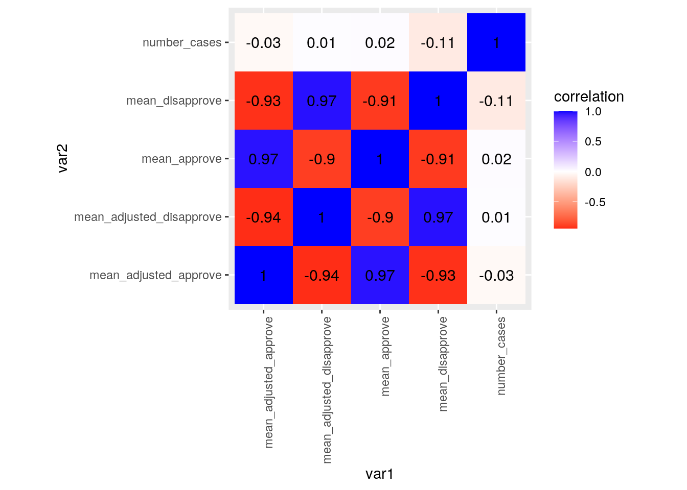
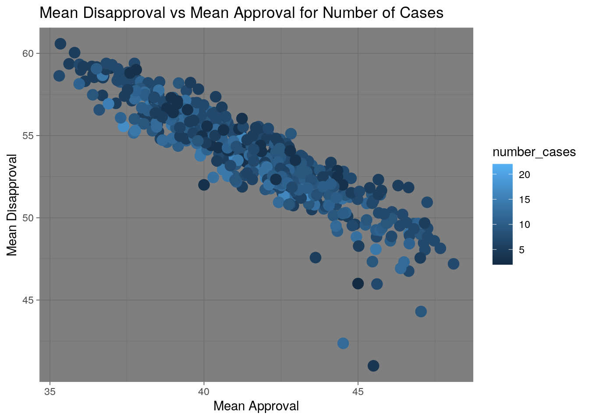
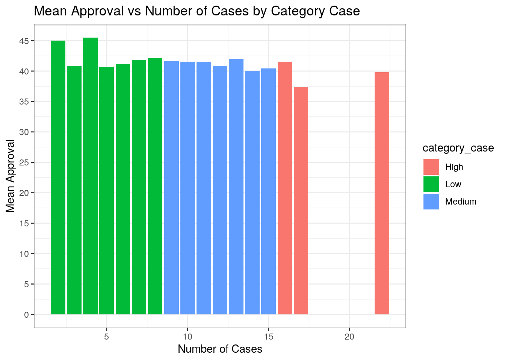
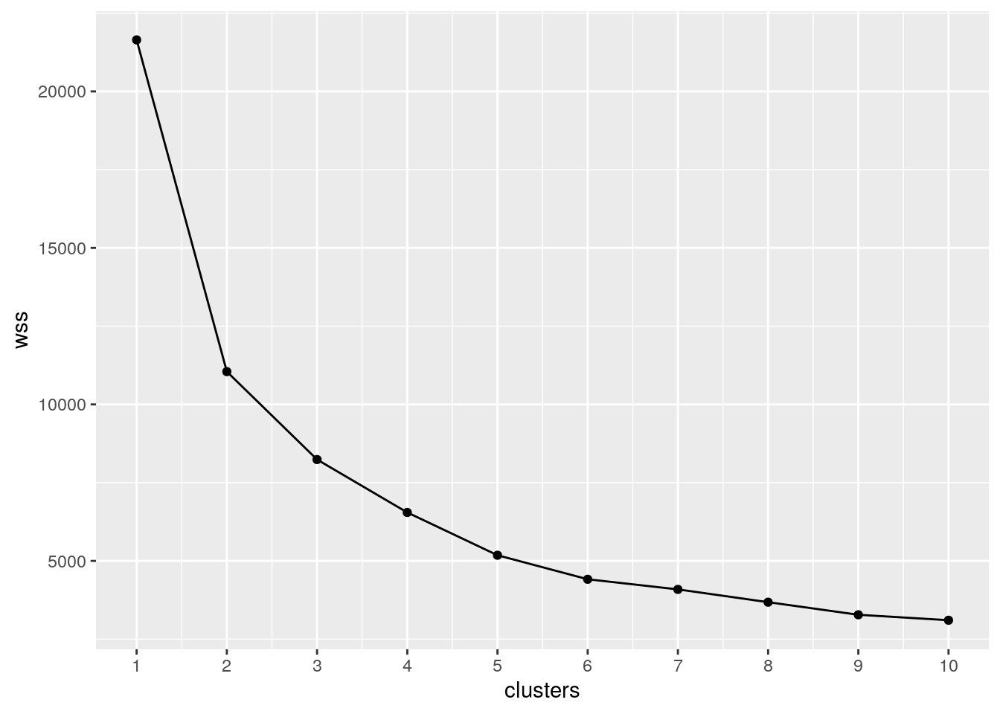
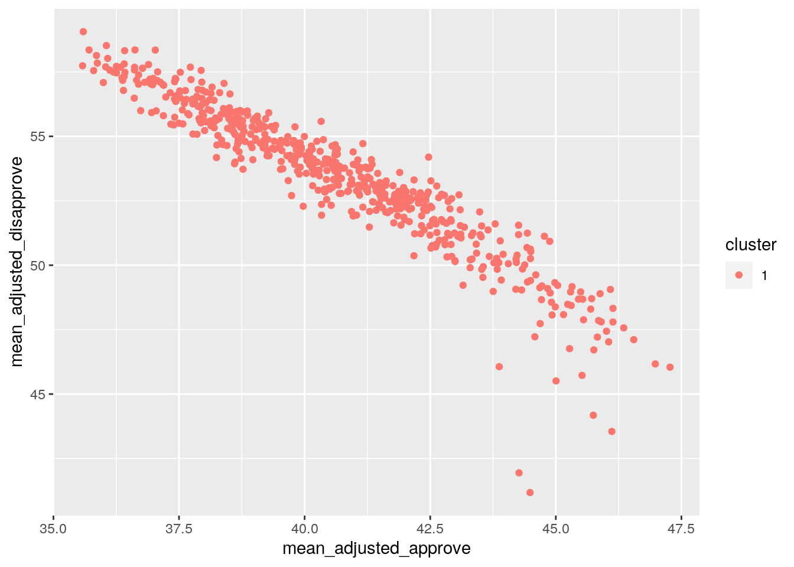

# Installing required packages
library(tidyverse)## ── Attaching packages ───────────────────────────────────────────────────────────────────────────────────────────────────────────── tidyverse 1.3.0 ──## ✓ ggplot2 3.3.2 ✓ purrr 0.3.4
## ✓ tibble 3.0.3 ✓ dplyr 1.0.2
## ✓ tidyr 1.1.1 ✓ stringr 1.4.0
## ✓ readr 1.3.1 ✓ forcats 0.5.0## ── Conflicts ──────────────────────────────────────────────────────────────────────────────────────────────────────────────── tidyverse_conflicts() ──
## x dplyr::filter() masks stats::filter()
## x dplyr::lag() masks stats::lag()library("fivethirtyeight")
install.packages("fivethirtyeight", repos = "http://cran.us.r-project.org")## Installing package into '/stor/home/amv3428/R/x86_64-pc-linux-gnu-library/3.6'
## (as 'lib' is unspecified)data("trump_approval_poll")
data("trump_lawsuits")Introduction In the "trump_approval_poll", dataset, the variables include subgroup, start_date, end_date, pollster, grade, sample_size, population, weight, approve, disapprove, adjusted_approve, adjusted_disapprove, multiversions, tracking, url, poll_id, question_id, created_date, and timestamp. In the "trump_lawsuits" dataset, the variables are docket_number, date_filed, case_name, plaintiff, defendent, current_location, previous_location, jurisdiction, nature, trump_category, capacity, type, issue, docket_orig, and status. The purpose of our final dataset is to compare the total monthly lawsuits filed against Trump by the monthly average approval and disapproval rates. The common variable between the two datasets is the date(month), and our final different variables are average monthly approval, average monthly disapproval, number cases for the date filed, and category case (which we created by mutate), mean approval adjusted rates, and mean disapproval adjusted rates. This information is interesting to me because I was curious on of Trump's approval ratings have a correlation with the number of court cases that are filed against him. I wanted to know whether or not people care too much about the lawsuits against Trump and whether it would affect his approval rating or not.
# Renaming the datasets to make them easier
tap <- trump_approval_poll
tl <- trump_lawsuits
# Deleting columns (we don't need these)
tl <- tl %>% select(-docket_number, -plaintiff, -defendant, -current_location, -previous_location, -judge, -docket_orig, -status, - nature)
#Filters to make sure the data is correct
tl <- tl %>% filter((type == 1) | (type == 2))
# Organizing data by year-month acsending
tl <- tl %>% arrange(date_filed) %>% na.omit()
head(tl)## # A tibble: 6 x 7
## date_filed case_name jurisdiction trump_category capacity type issue
## <date> <fct> <dbl> <fct> <fct> <fct> <fct>
## 1 2016-03-15 Michaels v. Ses… 1 2 2 1 Whitak…
## 2 2016-08-19 United States v… 1 2 5 1 Pardons
## 3 2016-08-25 Batalla Vidal v… 1 3 2 2 DACA
## 4 2017-01-17 Zervos v. Trump 2 2 1 2 Defama…
## 5 2017-01-23 CREW v. Trump 1 2 1 2 Emolum…
## 6 2017-06-12 The District of… 1 2 1 2 Emolum…I first renamed the data to make them easier to pull out, and then I deleted the columns I believe that I do not need within the trump_lawsuts for the final dataset. I used filter() to make sure that the data looks right by pulling out "type" out to make sure that there are only type 1 and 2 cases. This is just to make sure that the data is correct and there are no extra numbers within the type variable. I then used arrange() to organize the date filed variable in ascending order while using na.omt() to delete all the NA's within the date filed variable.
# Deleting columns (we don't need these)
tap <- tap %>% select(-subgroup, - start_date, -pollster, -population, -weight, -multiversions, -tracking, -url, -poll_id, -question_id, -created_date, -timestamp)
# Organizing data by year-month acsending
tap <- tap %>% arrange(end_date) %>% na.omit()
head(tap)## # A tibble: 6 x 7
## end_date grade sample_size approve disapprove adjusted_approve
## <date> <ord> <int> <dbl> <dbl> <dbl>
## 1 2017-01-22 B- 1992 46 37 42.7
## 2 2017-01-22 B 1500 45 45 46.1
## 3 2017-01-22 B 1500 45 45 45.4
## 4 2017-01-22 B- 1992 46 37 43.8
## 5 2017-01-23 B 1500 45 46 46.1
## 6 2017-01-23 B 1500 45 46 45.4
## # … with 1 more variable: adjusted_disapprove <dbl>Then I moved on to deleting the columns for trump_approval_poll dataset, and I organized the end_date by ascending order using arrange(). I chose the end_date to keep as the variable in the final dataset instead of start_date because the end_date would have all the accurate approval and disapproval ratings, waiting for the response from everyone. The start date would be too early to have an accurate rating since not all people may have inputed their approval/disapproval ratings.
# Joins tl and tap together
jds <- tl %>% right_join(tap, by = c("date_filed" = "end_date"))
#Creates a dataset that containes the number of cases for each day
jds_court_count <- jds %>% count(date_filed)
#Renames the n column to "number_cases"
jds_court_count <- jds_court_count %>% rename(number_cases = n)
#Creates a categorical for the number cases
jds_court_count <- jds_court_count %>% mutate(category_case = ifelse(number_cases > 8, (ifelse(number_cases > 15, "High", "Medium")), "Low"))
#Creates columns for each mean
jds <- jds %>% group_by(date_filed) %>% summarize(mean_approve = mean(approve), mean_disapprove = mean(disapprove), mean_adjusted_approve = mean(adjusted_approve), mean_adjusted_disapprove = mean(adjusted_disapprove))## `summarise()` ungrouping output (override with `.groups` argument)#Summary statistics for overall data (before grouping by categorical variable)
jds_summary <- jds %>% summarize("Mean: mean_approve" = mean(mean_approve), "SD: mean_approve" = sd(mean_approve), "N_distinct: mean_approve" = n_distinct(mean_approve), "Var: mean_approve" = var(mean_approve), "Min: mean_approve" = min(mean_approve), "Max: mean_approve" = max(mean_approve), "Median: mean_approve" = median(mean_approve), "Cor: mean_approve, mean_adjusted_approve" = cor(mean_approve, mean_adjusted_approve))
#joins the datasets so the nubmer of cases is avaliable
jds <- jds %>% right_join(jds_court_count)## Joining, by = "date_filed"#Summary statistics for grouped data
jds_group_summary <- jds %>% group_by(category_case) %>% summarize("Mean: mean_approve" = mean(mean_approve), "Mean: mean_disapprove" = mean(mean_disapprove), "Mean: mean_adjusted_approve" = mean(mean_adjusted_approve), "Mean: mean_adjusted_disapprove" = mean(mean_adjusted_disapprove), "SD: mean_approve" = sd(mean_approve), "SD: mean_disapprove" = sd(mean_disapprove), "SD: mean_adjusted_approve" = sd(mean_adjusted_approve), "SD: mean_adjusted_disapprove" = sd(mean_adjusted_disapprove)) ## `summarise()` ungrouping output (override with `.groups` argument)glimpse(jds)## Rows: 567
## Columns: 7
## $ date_filed <date> 2017-01-22, 2017-01-23, 2017-01-24, 2017-01…
## $ mean_approve <dbl> 45.50000, 45.00000, 47.04444, 44.51667, 46.6…
## $ mean_disapprove <dbl> 41.00000, 46.00000, 44.30000, 42.36667, 46.7…
## $ mean_adjusted_approve <dbl> 44.48786, 45.74678, 46.11489, 44.26766, 45.5…
## $ mean_adjusted_disapprove <dbl> 41.17792, 44.17749, 43.54907, 41.94113, 45.7…
## $ number_cases <int> 4, 2, 9, 12, 7, 5, 7, 7, 7, 12, 7, 13, 5, 9,…
## $ category_case <chr> "Low", "Low", "Medium", "Medium", "Low", "Lo…I now joined the two datasets together using right_join to preserve the data because when I tried inner_join, it deleted way too many observations and datapoints. The right_join returns all rows from the right dataset and all the columns from the left dataset and right dataset. In joining the datasets, date_filed is the common variable between the two datasets. I also created a dataset that contains the number of cases filed against Trump per date given. I renamed the "n" variable to "number_cases" because this variable stood for the actually number of cases filed against President Trump. I now used mutate() in order to create a new categorical variable that indicates the category of the case based on the number of cases filed against Trump. Lee than 8 cases or less filed means that this is "low," 8-14 cases means that this is "medium", and 15 and higher cases filed means that this is "high." Creating columns for each mean of the numeric variable (mean_approve, mean_disapprove, mean_adjusted_approve, and mean_adjusted_disapprove), I used "group_by" the date_filed and the summerize function to find the means of the numeric variables just listed. I also found the summary statistics for the overall data before grouping by the categorical varaible (category_case). I found the mean, standard deviation, variance, minimum, maximum, and median of the mean_approve. I also found the correlation between the mean_approve and the mean_adjusted_approve values.
The "number cases" variable is number of cases filed against Trump by the date that is filed.
I joined the dataset again so that I could combine the categorical variables with the set that contained the numeric variables, so now jds has the categorical variable (category_case). I now found the summary statistics for the grouped data, grouping by the category_case. I found the mean of mean_approve, mean of mean_disapprove, mean of mean_adjusted_approve, standard deviation of mean_approve, standard deviation of mean_disapprove, standard deviation of mean_adjusted_approve, and standard deviation of mean_adjusted_disapprove.
#Prints out the summary statistics (not grouped)
glimpse(jds_summary)## Rows: 1
## Columns: 8
## $ `Mean: mean_approve` <dbl> 41.33347
## $ `SD: mean_approve` <dbl> 2.715785
## $ `N_distinct: mean_approve` <int> 502
## $ `Var: mean_approve` <dbl> 7.37549
## $ `Min: mean_approve` <dbl> 35.3
## $ `Max: mean_approve` <dbl> 48.1
## $ `Median: mean_approve` <dbl> 41.36667
## $ `Cor: mean_approve, mean_adjusted_approve` <dbl> 0.9706319This is the summary statistics of the dataset before grouping by.
#untidying the data
jds_group_summary <- jds_group_summary %>% pivot_wider(names_from = "category_case", values_from = "Mean: mean_approve")
#retidying the data
jds_group_summary <- jds_group_summary %>% pivot_longer(c("Low","Medium","High"), names_to ="Category", values_to="Mean: mean_approve") %>% na.omit
#Prints out the summary statistics (grouped)
glimpse(jds_group_summary)## Rows: 3
## Columns: 9
## $ `Mean: mean_disapprove` <dbl> 54.01297, 54.33130, 53.71438
## $ `Mean: mean_adjusted_approve` <dbl> 40.18516, 40.67503, 40.54019
## $ `Mean: mean_adjusted_disapprove` <dbl> 53.82832, 53.44112, 53.47383
## $ `SD: mean_approve` <dbl> 1.99194, 2.85154, 2.54402
## $ `SD: mean_disapprove` <dbl> 2.007311, 2.965887, 2.751769
## $ `SD: mean_adjusted_approve` <dbl> 2.166312, 2.617373, 2.441732
## $ `SD: mean_adjusted_disapprove` <dbl> 2.158180, 2.820497, 2.638898
## $ Category <chr> "High", "Low", "Medium"
## $ `Mean: mean_approve` <dbl> 40.72114, 41.31030, 41.38346This is the summary statistics for the dataset that is grouped by category_case. The summary stastistics used was mentioned in the previous paragraph.
#Creates a correlation matrix
cormat <- jds %>% na.omit %>% select_if(is.numeric) %>% cor(use = "pair")
#Tidying correlation matrix
tidycor <- cormat %>% as.data.frame %>% rownames_to_column("var1") %>% pivot_longer(-1, names_to = "var2", values_to = "correlation")
#Visualizing correlation matrix
tidycor %>% ggplot(aes(var1, var2, fill = correlation)) + geom_tile() + scale_fill_gradient2(low = "red", mid = "white", high = "blue") + geom_text(aes(label = round(correlation, 2)), color = "black", size = 4) + theme(axis.text.x = element_text(angle = 90, hjust = 1)) + coord_fixed() I created a correlation between all of the numeric variables using select(is.numeric). I then tidied the correlation. From the correlation matrix, it is evident that there is no correlation between the number of cases filed against Trump and the mean approval, mean disapproval rates, mean adjusted approval, and mean disapproval rates. Although not much, there is a bit more of a correlation between the mean disapproval rates to the number of cases. The highest correlation we got (which is not even high) is the correlation between the number of cases filed against Trump and the mean disapproval rate (-0.11). There is somewhat of a difference in correlation between the adjusted approval and disapproval values and the non-adjusted values according to the correlation coefficents. There is a very very weak negative correlation (basically no correlation) between the mean disapproval ratings and the mean adjusted approval ratings to the number of cases filed against Trump.
#Dot ggplot
ggplot(data = jds, aes(x = mean_approve, y = mean_disapprove)) + geom_point(size = 4, aes(color = number_cases)) + theme_dark() + ggtitle("Mean Disapproval vs Mean Approval for Number of Cases") + ylab("Mean Disapproval") + xlab("Mean Approval") In the process of creating the ggplot, I mapped the mean approval on the x-axis and the mean disapproval on the y-axis while coloring the data by the number of cases. I renamed the title and the axis labels, and then I changed the theme to make it dark. I used geom_point to add in the points of the cases at each mean_approval vs mean_disapproval ratings. Between mean approval and mean disapproval there is a clear negative correlation. Although there was no correlation between the day the number of cases that are filed against Trump and any on the other variables, there is some darker color and medium color at the top of the graph, indicating there are some higher disapproval ratings on the higher number of cases and medium number of cases (there is still no correlation between the approval ratings/disapproval ratings with the number of cases though).
#Bar ggplot
ggplot(jds, aes(x = number_cases, y = mean_approve, fill = category_case)) + geom_bar(stat = "summary", position = "dodge") + theme_bw() + scale_y_continuous(breaks = seq(0, 50, 5)) + ggtitle("Mean Approval vs Number of Cases by Category Case") + ylab("Mean Approval") + xlab("Number of Cases")## No summary function supplied, defaulting to `mean_se()` I now plotted a ggplot and using geom_bar to make a bar graph with the number cases on the x-axis and the mean approval rating on the y-axis. I filled the bar graph by the category case and differentiated by the colors of the different cases (high = red, low = green, medium = blue). There is also no correlation between the category case and mean approval. I added the tick marks using scale_y_continuous(breaks) and I also changed the theme once again to theme_bw(). This graph shows the clear distinctions between our categorical values. Again, there is no correlation between number of cases and mean approval. The day that the number of cases filed against in the high, low, and medium categories seem to have the same mean approval rates for Trump on average.
#Determining the number of clusters
wss <- vector()
for(i in 1:10) {
temp <- jds %>% select(mean_adjusted_approve, mean_adjusted_disapprove, mean_approve, mean_disapprove, number_cases) %>% kmeans(i)
wss[i] <- temp$tot.withinss
}
ggplot() + geom_point(aes(x = 1:10, y = wss)) + geom_path(aes(x = 1:10, y = wss)) + xlab("clusters") + scale_x_continuous(breaks = 1:10)
I determined the number of clusters using the for loop() function. I ended up using 1 cluster for my dataset according to the for loop. I calculated the kmean for 1-10 clusters, and the graph shows that the number of cluster with the highest WSS is 1 cluster, which is what we will use for our dataset.
#Getting the cluster means
kmeans1 <- jds[2:6] %>% scale %>% kmeans(1)
kmeans1## K-means clustering with 1 clusters of sizes 567
##
## Cluster means:
## mean_approve mean_disapprove mean_adjusted_approve mean_adjusted_disapprove
## 1 6.77099e-16 9.694381e-16 1.167594e-15 -1.085943e-15
## number_cases
## 1 3.563679e-16
##
## Clustering vector:
## [1] 1 1 1 1 1 1 1 1 1 1 1 1 1 1 1 1 1 1 1 1 1 1 1 1 1 1 1 1 1 1 1 1 1 1 1 1 1
## [38] 1 1 1 1 1 1 1 1 1 1 1 1 1 1 1 1 1 1 1 1 1 1 1 1 1 1 1 1 1 1 1 1 1 1 1 1 1
## [75] 1 1 1 1 1 1 1 1 1 1 1 1 1 1 1 1 1 1 1 1 1 1 1 1 1 1 1 1 1 1 1 1 1 1 1 1 1
## [112] 1 1 1 1 1 1 1 1 1 1 1 1 1 1 1 1 1 1 1 1 1 1 1 1 1 1 1 1 1 1 1 1 1 1 1 1 1
## [149] 1 1 1 1 1 1 1 1 1 1 1 1 1 1 1 1 1 1 1 1 1 1 1 1 1 1 1 1 1 1 1 1 1 1 1 1 1
## [186] 1 1 1 1 1 1 1 1 1 1 1 1 1 1 1 1 1 1 1 1 1 1 1 1 1 1 1 1 1 1 1 1 1 1 1 1 1
## [223] 1 1 1 1 1 1 1 1 1 1 1 1 1 1 1 1 1 1 1 1 1 1 1 1 1 1 1 1 1 1 1 1 1 1 1 1 1
## [260] 1 1 1 1 1 1 1 1 1 1 1 1 1 1 1 1 1 1 1 1 1 1 1 1 1 1 1 1 1 1 1 1 1 1 1 1 1
## [297] 1 1 1 1 1 1 1 1 1 1 1 1 1 1 1 1 1 1 1 1 1 1 1 1 1 1 1 1 1 1 1 1 1 1 1 1 1
## [334] 1 1 1 1 1 1 1 1 1 1 1 1 1 1 1 1 1 1 1 1 1 1 1 1 1 1 1 1 1 1 1 1 1 1 1 1 1
## [371] 1 1 1 1 1 1 1 1 1 1 1 1 1 1 1 1 1 1 1 1 1 1 1 1 1 1 1 1 1 1 1 1 1 1 1 1 1
## [408] 1 1 1 1 1 1 1 1 1 1 1 1 1 1 1 1 1 1 1 1 1 1 1 1 1 1 1 1 1 1 1 1 1 1 1 1 1
## [445] 1 1 1 1 1 1 1 1 1 1 1 1 1 1 1 1 1 1 1 1 1 1 1 1 1 1 1 1 1 1 1 1 1 1 1 1 1
## [482] 1 1 1 1 1 1 1 1 1 1 1 1 1 1 1 1 1 1 1 1 1 1 1 1 1 1 1 1 1 1 1 1 1 1 1 1 1
## [519] 1 1 1 1 1 1 1 1 1 1 1 1 1 1 1 1 1 1 1 1 1 1 1 1 1 1 1 1 1 1 1 1 1 1 1 1 1
## [556] 1 1 1 1 1 1 1 1 1 1 1 1
##
## Within cluster sum of squares by cluster:
## [1] 2830
## (between_SS / total_SS = 0.0 %)
##
## Available components:
##
## [1] "cluster" "centers" "totss" "withinss" "tot.withinss"
## [6] "betweenss" "size" "iter" "ifault"Because we only have one cluster, all of our elements are in cluster 1. The cluster means are also listed above. The value attached to each of the numeric variable is the mean of every single one of the variable (mean approve, mean disapprove, mean adjusted approve, mean adjusted approve, and number of cases).
#Graphing the cluster
kmeansclust <- jds %>% mutate(cluster = as.factor(kmeans1$cluster))
kmeansclust %>% ggplot(aes(mean_adjusted_approve, mean_adjusted_disapprove, mean_approve, mean_disapprove, number_cases, color = cluster)) + geom_point()## Warning: Duplicated aesthetics after name standardisation: Because there is only one cluster, the graph looks very similar to the ggplot that we had (using geom_point). Because there is only one cluster, the data points can't be grouped in a meaningful way. The plot just shows us the correlation between different variables. We can see that this graph shows a negative correlation between mean adjusted disapproval and mean adjusted approval.